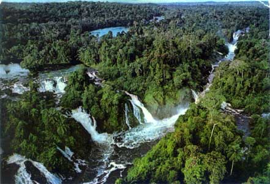

Why should the loss of tropical forests be of any concern to us in light of our own poor management of natural resources? The loss of tropical rainforests has a profound and devastating impact on the world because rainforests are so biologically diverse, more so than other ecosystems (e.g., temperate forests) on Earth.
Consider these facts:
- A single pond in Brazil can sustain a greater variety of fish than is found in all of Europe's rivers.
- A 25-acre plot of rainforest in Borneo may contain more than 700 species of trees - a number equal to the total tree diversity of North America.
- A single rainforest reserve in Peru is home to more species of birds than are found in the entire United States.
- One single tree in Peru was found to harbor forty-three different species of ants - a total that approximates the entire number of ant species in the British Isles.
- The number of species of fish in the Amazon exceeds the number found in the entire Atlantic Ocean.

The biodiversity of the tropical rainforest is so immense that less than 1 percent of its millions of species have been studied by scientists for their active constituents and their possible uses. When an acre of topical rainforest is lost, the impact on the number of plant and animal species lost and their possible uses is staggering. Scientists estimate that we are losing more than 137 species of plants and animals every single day because of rainforest deforestation.
Surprisingly, scientists have a better understanding of how many stars there are in the galaxy than they have of how many species there are on Earth. Estimates vary from 2 million to 100 million species, with a best estimate of somewhere near 10 million; only 1.4 million of these species have actually been named. Today, rainforests occupy only 2 percent of the entire Earth's surface and 6 percent of the world's land surface, yet these remaining lush rainforests support over half of our planet's wild plants and trees and one-half of the world's wildlife. Hundreds and thousands of these rainforest species are being extinguished before they have even been identified, much less catalogued and studied. The magnitude of this loss to the world was most poignantly described by Harvard's Pulitzer Prize-winning biologist Edward O. Wilson over a decade ago:
"The worst thing that can happen during the 1980s is not energy depletion, economic collapses, limited nuclear war, or conquest by a totalitarian government. As terrible as these catastrophes would be for us, they can be repaired within a few generations. The one process ongoing in the 1980s that will take millions of years to correct is the loss of genetic and species diversity by the destruction of natural habitats. This is the folly that our descendants are least likely to forgive us for."
Yet still the destruction continues. If deforestation continues at current rates, scientists estimate nearly 80 to 90 percent of tropical rainforest ecosystems will be destroyed by the year 2020. This destruction is the main force driving a species extinction rate unmatched in 65 million years.